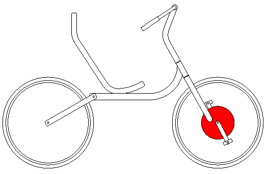

Contents | About | Contact
article 26, issue 11
In-Hub Gearbox Front Wheel Drive CyclesStephen Nurse
February 21, 2019
Abstract
In 1999, Bike Culture Quarterly magazine and Thomas Kretschmer introduced the concept of a chainless bicycle featuring a wide range, front wheel drive gearbox hub. Twenty years later, the European company Kervelo are making production versions of these chainless gearbox cycles. This paper discusses how Kervelos were developed by meeting needs and through dedicated individuals and companies. It considers effective uses for human power based on front wheel drive chainless gearbox technology.

Figure by Stephen Nurse
Download the complete article PDF (1.4 MB)